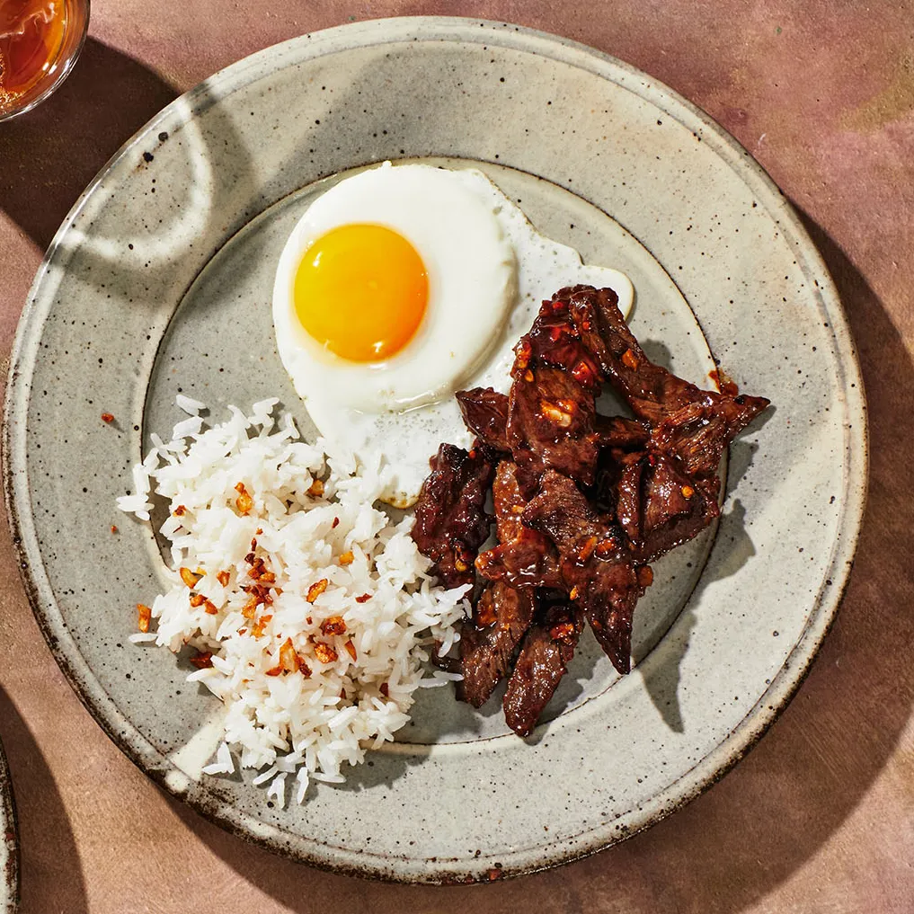
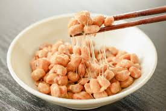
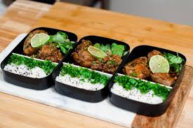
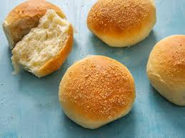
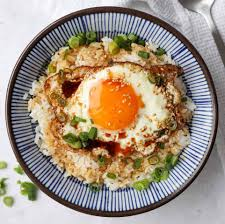
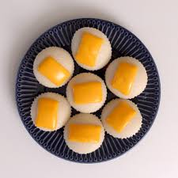
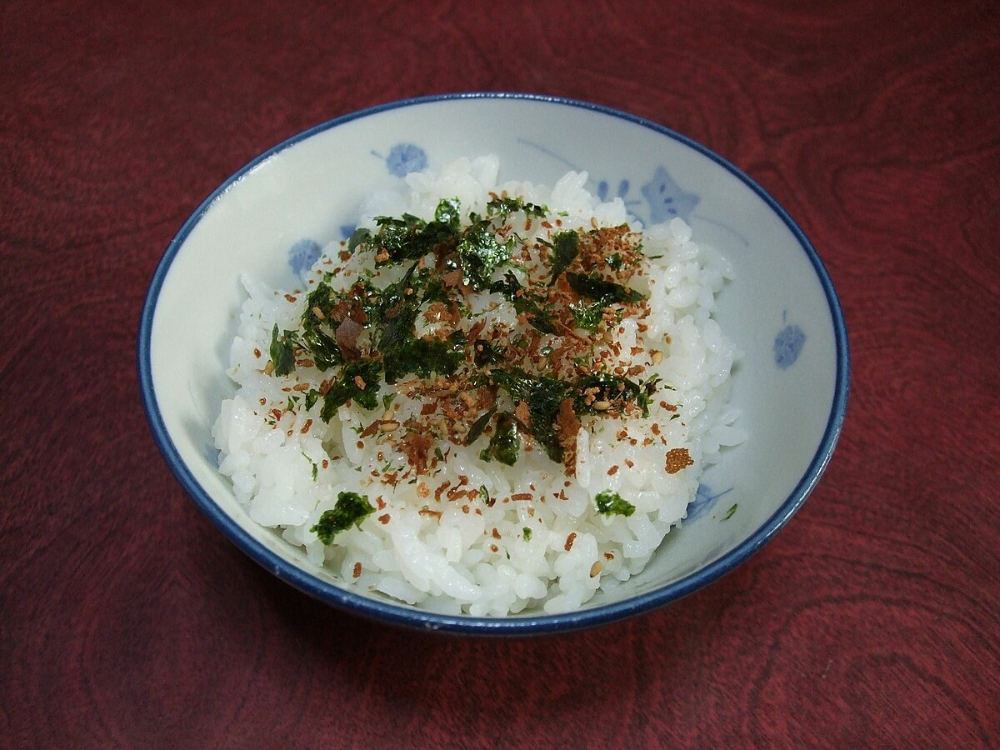
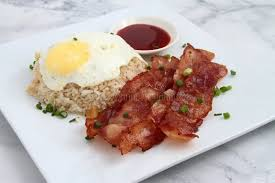

Tapsilog is a filipino dish that is quick and easy to make! This includes tapa, egg, garlic rice, and garlic. Recipe  |
Fermented soy beans or "natto" is a evry popular japanese dish and is considered a super food. This includes soy beans. Recipe  |
This is omurice, a popular japanese dish that has all the basic needs of breakfast. This includes egg, ketchup, rice, lettuce, and cherrys.
|
|---|---|---|
Pento or a Philippine's styled bento box is a go-to for many! This includes chicken, chives, rice, limes, soy sauce, and lettuce. Recipe  |
Pandesal, which translates to "salt bread" in Filipino is a small, slightly sweet bread roll that is a staple on Filipino breakfast tables. Recipe  |
Tamago kake gohan is one of Japan's most famous comfort food. This includes a raw egg, hot rice, soy sauce, green onions, and sesame soil. Recipe  |
Puto is a Filipino steamed rice cake, it is also an umbrella term for various kinds of indigenous steamed cakes. This inclued slightly ferment rice dough. Recipe  |
Furikake is a dry Japanese condiment sprinked on top of food, this is also normally found on onigiri. This includes cooked rice, vegetables, and fish. Recipe |
Bacsilog is a popular Filipino breakfast and is quick and easy to make! This includes bacon, garlic rice, egg, chives, and your choice of sauce! Recipe |